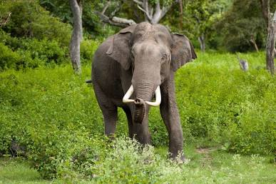
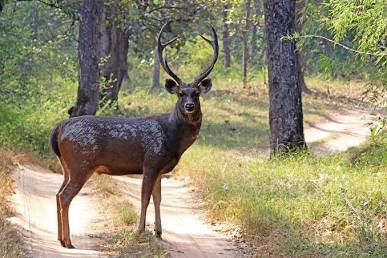
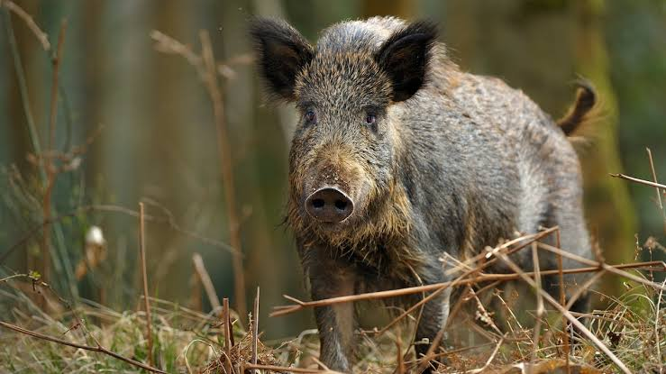
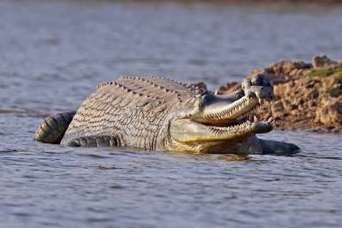
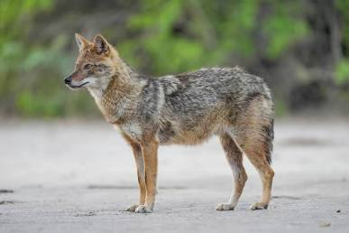
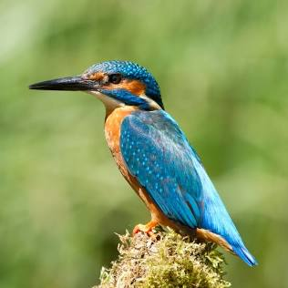
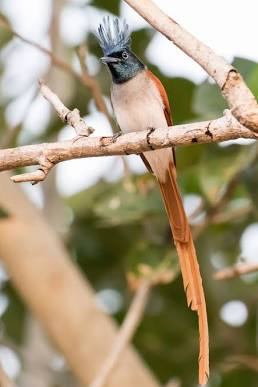
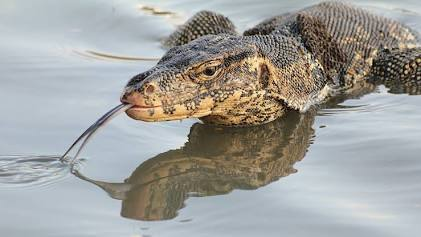

Animals You Can Spot @ Corbett
The reserve is home to a diverse range of mammals, reptiles and birds.

Tiger

Asian Elephant

Leopard

Chital

Sambar Deer

Wild Boar

Gharial

Mugger Crocodile

Jackal

Kingfisher

Asian Paradise Flycatcher

Monitor Lizard
Corbett is also home to many other species of mammals, reptiles and more than 580 recorded bird species. Actual sightings depend on season, habitat and natural conditions.